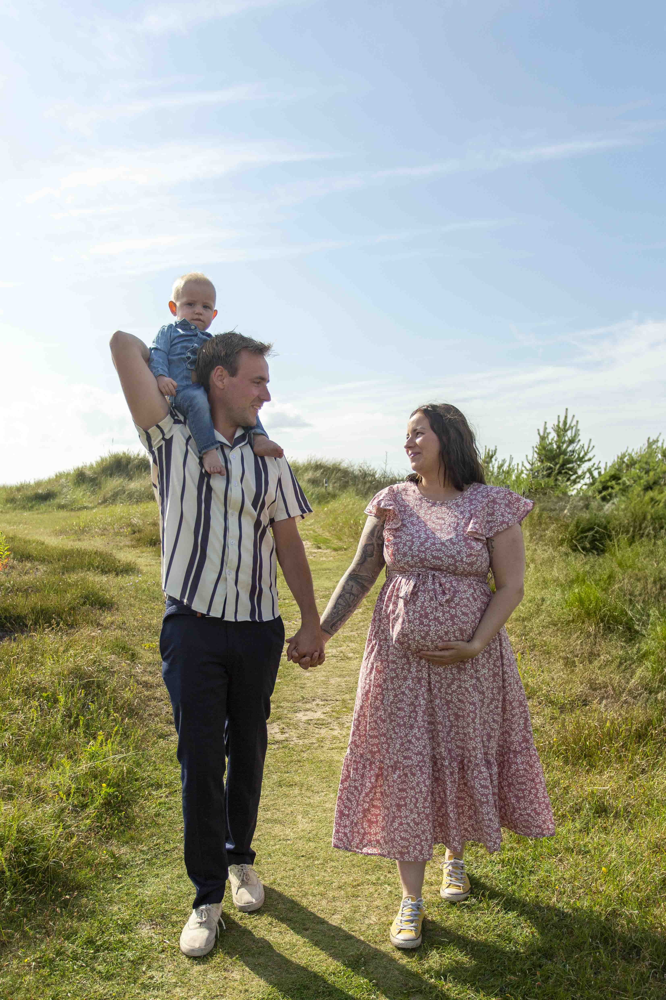
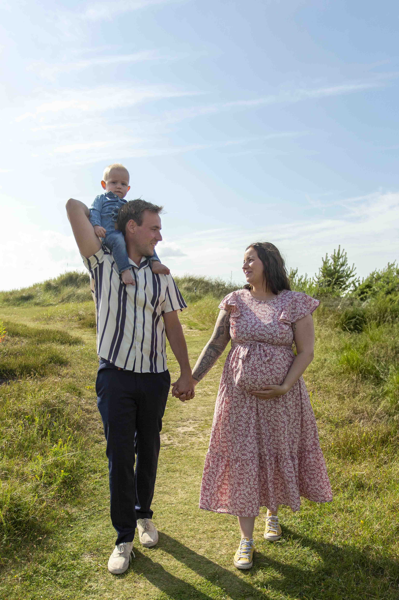

Gravidfotograf i Södra Halland
Stärkande & Avslappnade bilder fulla med värme och kärlek.
Att fånga de specialla ögonblicken i väntan på ert lilla mirakel är något av det mest magiska jag vet. Oavsett om ni väntat flera år på den här stunden, eller om ni blev glatt överraskade med ett plus på stickan. Er resa och din graviditet förtjänar att hyllas och förevigas.
Som fotograf finns jag där med kameran som en förlängning av blicken, alltid redo att fånga de där små, men så viktiga, stunderna. Det kan vara ett ögonkast av ömhet mellan dig och din partner, ett skratt som kommer av glädjen som uppstår när du känner en spark, eller den värme som kommer när din partner håller om dig och magen.
Tillsammans skapar vi en avslappnad och naturlig atmosfär där du får vara just som du är - utan press, utan krångel, bara ärliga och vackra ögonblick av kärlek, förväntan och närhet.
"... jag fick en fin stund med pojkarna i magen och boosting för självförtroendet"
- Kristina L
En stressfri dag med DIG i fokus
DINA ÖNSKEMÅL
Vill du ha bilder med klänningar som får dig att känna dig som en drottning? Då kör vi på det! Vill du ha bilder tillsammans med din partner? Självklart! Vill du ha tidigare syskon med på bilden? Det löser vi!
Du bestämmer helt vilken typ av gravidbilder som vi fångar! Det är helt enligt dina vilkor, det är ju ändå du som genomför en supermänsklig kraft - gror och bär på ett nytt litet liv!
ANPASSAD GUIDE
Vid varje bokning skickar jag ut en anpassad guide just för gravidfotografering. I guiden finns det tips på klädsel om partner och syskon ska vara med under fotograferingen, bra att tänka på inför fotograferingen, hur fotograferingen går till och annan nyttig fotografering så att du kan känna dig redo innan vi ens träffats för vår fotografering. Jag finns självklart alltid tillgänglig för att svara på era frågor!

NATURLIGT & STÄRKANDE
Under fotograferingen är allt fokus på DIG och jag guidar dig i hur du ska stå, hålla magen, var du ska titta och peppar dig genom hela fotograferingen för att du ska få känna dig som den drottning du är. Vid fotografering där familjen är med ser jag till att ni får intima och naturliga bilder som är fulla av kärleken ni delar mellan varandra. Jag ser till att ni får bilder ni vill hänga upp på väggen och se tillbaka på om och om igen!

PERSONLIGT GALLERI
Leveransen av bilderna levereras digitalt via ett webbgalleri som är lösenordsskyddat, endast ni kommer åt detta galleri. Där kan ni ladda ner alla bilder som ingår i ert paket i både högupplöst format (för förstoringar upp till 30x40cm) och webbanpassat format. Fysiska produkter levereras hem till er adress!
Vi skapar mer än bara bilder. Vi skapar minnen!

 



Jag fångar din graviditet precis så som du vill!
Det spelar ingen roll om du vill ha enskilda porträtt med klänningar som får dig att känna dig som en drottning, om du vill ha en intim och lättsam stund med din partner och extra barn, om du vill ha en kombination av båda två. Jag förevigar din graviditet precis så som du vill! För det är ju trots allt Din graviditet och Du som bär på det nya lilla livet.


SÅ HÄR SER PROCESSEN UT:
I. Första mötet & bokning
Allt börjar med att ni hör av er - via kontaktformuläret på min kontaktsida, mejl, SMS eller BokaDirekt - välj det sätt som passar er bäst. När ni kontaktar mig återkommer jag med all information ni behöver. När ni känner er redo att boka skickar jag över ett tryggt och tydligt avtal tillammans med en faktura för bokningsavgiften och en guide inför fotograferingen, så att allt känns klart och ordnat inför fotograferingen vi har framför oss.
II. Fotodagen
Äntligen är det dags! Nu är det er familjs tur att fånga kärleken, närheten och glädjen tillsammans framför kameran. Tillsammans skapar vi en avslappnad stund där ni får vara precis som ni är: busa, kramas, lek och skratta tillsammans. Under fotograferingen guidar jag er genom olika lekar och bus - allt för att locka fram de där genuina skratten, nyfikenheten och den där härliga energin när barnen springer allt vad de kan.
III. Leverans av bilder
Efter fotograferingen börjar jag arbetet med att noggrannt gå igenom och redigera era bilder. Inom fyra (4) veckor får ni er fullständiga leverans - fylld av minnen, känslor och ögonblick att bevara för resten av livet. Bilderna levereras i ett digitalt webbgalleri där ni kan ladda ner bilderna i både högupplöst och webbanpassat format.
Ofta ställda frågor
Så fort som möjligt! Jag erbjuder endast ett visst antal tider under helger då jag även fotograferar bröllop. Under vardagarna finns det fler möjliga tider för fotografering, men det är alltid bra att boka så tidigt som möjligt så ni vet att jag har möjlighet att föreviga just er gravidmage!
Ja det gör jag! Än så länge fotograferar jag endast i större delen av Götaland (Skåne, Halland, Västra Götaland, Småland, Blekinge, Dalsland, Bohuslän och Östergötland). Min vision är att i framtiden utöka mitt geografiska område även för gravidfotografering!
Jag rekommenderar att du bokar in en fotografering när du är mellan vecka 28-36. Då är magen oftast rund och fin, och du är inte för nära förslossningen för att känna dig för trött eller svullen. Varje gravidmage är ju dessutom unik så vilken vecka som är bäst för dig kan vi bestämma genom ett samtal där jag får lära känna dig och vem/ vilka du bär på inne i magen!
Jag har en svaghet för att fota i vad som kallas "Golden Hour"! Då fångar vi sista timmen som solen är uppe innan den går ner och det blir det där varma och mjuka ljuset i bilderna som känns magiskt. Beroende på årstid blir det ju olika tider på dygnet. Under sommarhalvåret blir det runt 20:30-21:30 och på vinterhalvåret kan vi fotografera så pass tidigt som 13:30 för att få samma guldiga ljus.
Ja! Från och med Juli månad kommer jag ha två olika klänningar som går att låna för din fotografering. En som har mer volym och får dig att se och känna dig som den drottning du är, och en som är mer stilren, med långt släp som ger ett vackert och elegant uttryck i bilderna.
Självklart får partner och/ eller andra barn vara med! Vid fotograferingar där partner och barn ska vra med delar vi upp fotograferingen lite så vi börjar med alla tillsammans och fångar de stolta blickarna från barnen som snart ska bli storasyskon, kärleken som din partner utstrålar när ni står där och längtar efter ert tillskott till familjen. Sedan tar vi en stund för bara Dig. Där du är i fokus, där du blir hyllad, peppad och får magiska bilder på hur din kropp klarar av att skapa och bära ett nytt liv.
Jag håller alltid koll på väderprognosen inför er fotografering och skulle det se ut som det blir regn, storm eller annat extremväder så bokar vi om till en närliggande dag där väderprognosen ser bättre ut! Då jag endast gör fotograferingar utomhus blir det väldigt beroende av vädret, men så länge det är någorlunda okej väder och inte extremväder på något sätt så kör vi. Dramatiska moln på himlen kan ge en extra mäktig och ståtlig känsla i bilderna. Så det behöver inte vara stålande sol och blå himmel.
Det går jättebra att boka om din fotografering om något skulle komma ivägen. Du gör det helt kostnadsfritt och har fram till 24 timmar innan på dig att omboka. Hör gärna av dig så fort som möjligt om du vet med dig att du behöver boka om. På så sätt undviker du att tiderna skulle vara fulla efter din först planerade fotografering.
Är du redo att boka en timmes fotografering där du blir hyllad,
överröst av kärlek och får känna dig som den starkaste i hela världen?
Detta ingår i din upplevelse:
♥ Välkomstguide med information & tips
♥ Telefonkonsultation eller digitalt möte
♥ 1 timme avslappnad, stärkande och kärleksfull fotografering
♥ 2 olika ombyten för varierad känsla i bilderna
♥ Lån av 2 klänningar som ger en lyxigare känsla
♥ Webbgalleri för val av bilder för nedladdning i högupplöst & webbanpassat format
♥ 5 högupplösta digitala bilder, med möjlighet att köpa till fler
♥ 1 30x40 förstoring av din favoritbild
PRIS VARDAGAR: 6 900,00 SEK
PRIS HELGER: 7 900,00 SEK
Det går självklart att köpa till fler bilder om du önskar det!
Pris per bild är 350,00 SEK/bild eller lägre vid köp av bildpaket

Låt oss skapa minnen ni kan gå tillbaka till år efter år
Här nere ser ni hur många lediga datum jag har kvar för de kommande 4 månaderna under 2025.
Tiderna för fotografering på helgen går snabbt, så tveka inte att höra av er för att boka in en fotografering där vi förevigar gravidmagen och längtan efter det lilla tillskottet till familjen.
Det finns egentligen ingen "rätt" tid att föreviga magen. Men generellt brukar den bästa tiden vara mellan vecka 28-36. Då syns magen men du har fortfarande lättare att röra dig. Detta är dock helt olika från graviditet till graviditet och bär du på tvillingar kan man fotografera ännu tidigare eftersom magen syns tidigare än om det endast är en liten krabat i magen.
Det är bara att höra av dig om du har frågor om när det hade passat för Dig att genomföra en fotografering!
Juli
2 tider kvar på helgen
6 tider kvar på vardagar
Augusti
2 tider kvar på helgen
8 tider kvar på vardagar
September
4 tider kvar på helgen
8 tider kvar på vardagar
Oktober
3 tider kvar på helgen
8 tider kvar på vardagar
Bokningsformulär

Om mig
Bröllosfotograf som utgår från Oskarström i södra Halland, men som mer än gärna reser runt i Sverige för att föreviga era stora ögonblick.
Oskarström, Halland, Sverige